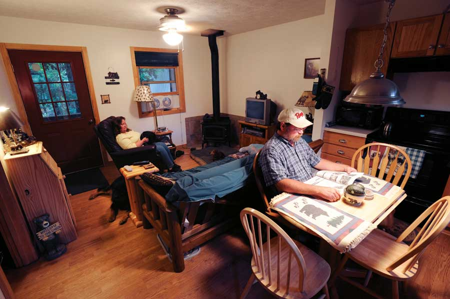
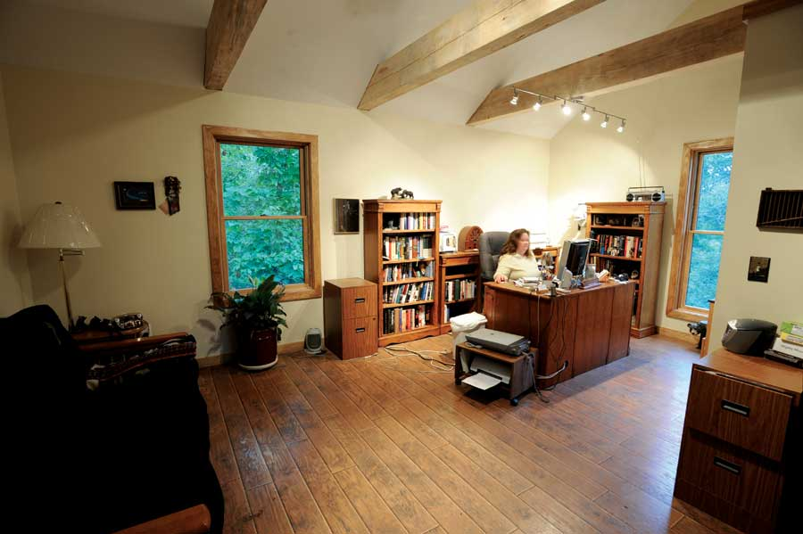

Remember the game of Twister? You put your feet and hands on different colored circles, which sometimes ties the players up in knots, and if you fall off of the space, you lose.
Often when I’m getting up for a bowl of ice cream in the evening, or especially when I get up in the middle of the night, I feel as though I’m playing Twister. Place my foot on the wrong spot, and I’m stubbing a toe on the dresser, tripping over a pair of shoes left in the wrong spot, or - worse yet - stepping on a dog’s paw or tail.
Still, I wouldn’t trade our 480-square-foot house in the country for the largest of McMansions in the suburbs.
Our “Little House in the Big Woods” - the moniker my sister-in-law has given our tiny dwelling in the Arkansas Ozark Mountains on Bull Shoals Lake - wasn’t originally intended to be a full-time residence. Sometimes, though, some of the best things that happen in life aren’t planned. Our little house was intended, and used for four years, as a getaway for me, my husband and our four dogs to escape our lives in the city.
Our original dream of living in the Big Woods involved a second house on our nearly 10 acres - not a mansion by any means, but large enough for us and my elderly mother. The Little House was to be a guesthouse and my writing studio.
On New Year’s Eve heading into 2007, we made the resolution to make our dream a reality. We began ridding our lives of unnecessary clutter. Our plans changed, however, when my mother passed away. Now, instead of my mother, I had only her antiques and heirlooms to take to the Big Woods.
After our bills were settled, our plans for another house had to be downsized. Building costs had skyrocketed in the time since we’d finished the Little House, and even an addition to the small dwelling might have been outside of our financial comfort zone. Two builders told us we couldn’t build up, or onto, the house on three of the most desirable sides because of the roofline. We felt an addition to the remaining side would take away from the place’s charm, so we scrubbed the entire plan of having a larger house.
The rest, as they say, is history. We decided to take a shot at living in the 480-square-foot Little House.
Life in the Little House was stressful at first, to put it mildly. I work from home, so our 10-by-10-foot bedroom suddenly had to double as my office. We had no room for a bed, so the futon we had bought to sleep on for short weekend stays had to do. Working in the bedroom was akin to working while sitting in an airplane seat, and notes and papers needed for my stories usually fell from my lap and became a jumbled heap on the floor.
It took us more than a year to come up with an alternative plan to building a new house or building on, but we finally decided to construct a large metal garage to house my mother’s heirlooms and other items I couldn’t bear to part with just yet. We also built a separate 320-square-foot office with a basement that doubles as a storage space and a tornado shelter, something we thought very important after a tornado in 2008 cut a wide swath through a town less than 20 miles away. We did it all for less than what it would have cost for the addition to the Little House.
There were days (and admittedly, we still have some) when we didn’t think we did anything right in planning our move, but there were decisions we made that - by sheer good luck - ended up working to our advantage.
When we built the Little House, we knew we would use it primarily in the summer months, and we didn’t want to install a furnace system, which would add significant costs to building our retreat. We did install a small woodburning stove, which was sufficient to heat the entire building. We built the house with the best insulation we could manage, as well as with 2-by-6 walls, instead of the code’s required 2-by-4. By heating the house using only the woodburning stove, we significantly reduced our utility bill for the remainder of winter.
We also had the foresight to allow for as much closet space as possible and put in the kitchen cabinets I wanted, as well as heavy-duty laminate flooring that would withstand a few years of trampling by large dog paws and boots stained with the red clay and rock from this part of the country. Even while on vacation, I didn’t want to worry about dragging our clothes back and forth from the city, so I insisted that the house have space for a washer and dryer.
Quite by accident, we ended up with a fully-equipped and beautiful (albeit tiny) dream house. In addition, I have a spacious writing studio that gets me out of the house, making me feel like I work away from home - only without the commute and with my dogs by my side and a beautiful view of the woods, mountains and wildlife on our property.
We’ve never been what would be called “trendy.” In this instance, though, it seems small houses are becoming more popular, so I don’t mind being part of that trend.
Gregory Paul Johnson, president of the Small House Society based in Iowa City, Iowa, says there are many people interested in living in smaller dwellings. While his organization claims about 1,000 members, he says his website, ResourcesForLife.com, received 70,000 hits after he did an interview on National Public Radio. Kent Griswold, a blogger in Heldsburg, Calif., who runs the site Tiny House Blog, says his site gets an average of 2,500 hits per day.
For some people, the interest in small homes may be primarily financial; for others, environmental; or for some, it may be mobility, as many people use RVs as their primary residence.
Regardless of why you may be considering a small house, there’s a lot we’ve learned that you may find helpful. Here are a few tips based on our experiences that may help your move go more smoothly.
If you can, try out a small house for as long as possible. We rented cabins of different sizes in order to decide how much space we would need. As we found out, though, spending one to two weeks on vacation is much different from actually living somewhere. We wish now that we had extended the living room and bedroom as far as our covered front porch. While it’s only 6 more feet, it would have made a huge difference when placing furniture.
Can’t decide what to get rid of, or have sentimental items you can’t bear to part with? Rent a storage locker, set a deadline for yourself, and then decide what you really need to keep.
Utilize outdoor spaces such as decks, patios and porches to provide space for entertaining or to create a quiet space. Our deck is about half the size of the house, and the covered front porch allows us to enjoy the outdoors even when it’s raining.
Have a place for everything and everything in its place. This is most important in small spaces. Add as many shelves, cubby holes and built-ins as possible to conserve space and preserve your sanity.
I’m not that into fashion or home decor, but I do have a fall/winter bedspread and shower curtains and a different set of each for spring/summer. These truly transform the house with a new look each season, and make it seem less confined.
Build the house using the most sustainable materials and with the most advanced energy conservation methods possible. The idea is to live better and smarter - not just for yourself, but also for the planet. That’s why we built a well-insulated home and bought energy-efficient appliances. Many also opt to build so they can live independent of utility companies. I have nearby friends who use solar power or have no electricity at all. Again, find your comfort level and what you can afford to do.
Purge your mail, paperwork and other clutter regularly and ruthlessly. Keeping a small house tidy does wonders to make it feel less cramped and more homey. Cancel all unwanted catalogs by calling the companies or going to Catalog Choice. Sign up for online statements and bill paying. You’ll eventually see a great reduction in mail. The two other added benefits: You’ll help protect the environment, and you’ll save money in postage!
You can find even more ideas for successfully living in a small home and learn more about our Little House in the Big Woods at Living Large In Our Little House.
|
KEVIN PIEPER Kerri and Dale’s small summer cabin turned out to be a perfect full-time residence. |
KEVIN PIEPER Kerri and her husband, Dale, on the deck of their Little House in the Big Woods. |
 KEVIN PIEPER An open floor plan makes the kitchen and living rooms feel more spacious. |
|
KEVIN PIEPER Kerri and Dale start the day comfortably outdoors. |
KEVIN PIEPER The covered porch adds important living space that can be used for evenings with friends or to enjoy a quiet moment outside. |
 KEVIN PIEPER Lots of light and a high ceiling make for an inviting freestanding office. |
|
KEVIN PIEPER Carefully selected decorative items make the home more cozy without adding clutter. |
KEVIN PIEPER The deck in back is half the size of the house, and adds valuable space for relaxing and entertaining, as well as nurturing an assortment of potted plants. |
KEVIN PIEPER Inside and out, “a place for everything, and everything in its place” is the author’s motto. |